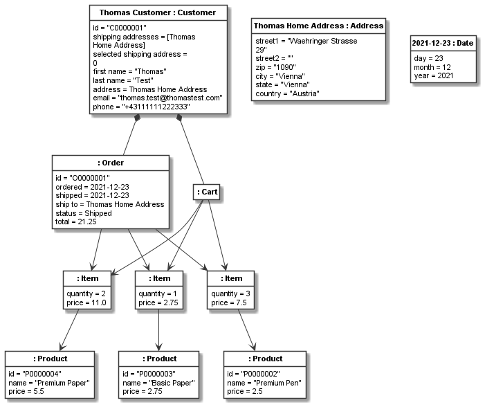

Improving the models through code¶
On the notion of codeable models¶
In the previous tutorials, we have learned about most basic features of Codeable Models needed to create class models and derive object models from them, i.e. basic modelling. Codeable Models has the intention to make it easy to code (or script) models. In many modelling syntaxes and tools this is only possible in a tedious way, e.g. by first writing a parser for a textual syntax and then some code for interpreting the model, in textual language workbenches by adding code generators and validators in the workflow of the tool, or by providing tooling extensions for graphical or projectional editors. Where it is possible, i.e. where a codeable models API is provided, often the API is written for tool builders and not for making it easy to create, access, and manipulate the models, meaning that a lot of boilerplate code is needed.
This is important even for the basic modelling tasks performed in the previous tutorials. In every day modelling tasks it is important to:
be able to use a concise syntax to specify and review the models,
generate graphical models and tailored views to get a good overview of the big picture and be able to communicate (with) the models,
be able to efficiently and effectively use copy & paste, search & replace, grep, and other text-based inspection and manipulation tools,
be able to easily perform static analyzes of model code,
be able to traverse and interpret the model to do tasks such as: generating code from models, interpreting the models e.g. in workflow engines, using them as models at runtime, generating metrics and other analytics based on the models, or using them as very literal implementations of domain models in domain-driven design.
As modelling needs a lot of steps that are repetitive or could lead to inconsistencies, it is the goal of Codeable Models to make it easy to use Python scripting to automate recurring tasks in modeling, avoid model inconsistencies in the first place (instead of later checking that no inconsistencies exist), easily support model traversal and analysis, and so on. To illustrate this idea, let us study a few places in the models from the prior tutorial that could benefit from such improvements in this tutorial.
Factory function or method for models¶
A recurring theme for introducing code into models is instance creation (be it an instance of a class or meta-class).
For example, in our models, the customer, product, order, and staff classes all contain an id.
It is rather likely that the id is created based on a predefined scheme, rather than manually assigned.
Manually assigned IDs can lead to inconsistencies in models, e.g. when the same ID is accidentally assigned twice.
This can be fixed by running a model validator on each created model, to check for the same IDs in different objects
of a kind, or by providing an object factory that performs id value creation according to the pre-defined rules.
Here are (very simple) examples of id creation functions for our four classes containing IDs:
_order_id_counter = 0
def get_order_id():
global _order_id_counter
_order_id_counter += 1
return "O" + "{:07d}".format(_order_id_counter)
_customer_id_counter = 0
def get_customer_id():
global _customer_id_counter
_customer_id_counter += 1
return "C" + "{:07d}".format(_customer_id_counter)
_staff_id_counter = 0
def get_staff_id():
global _staff_id_counter
_staff_id_counter += 1
return "S" + "{:07d}".format(_staff_id_counter)
_product_id_counter = 0
def get_product_id():
global _product_id_counter
_product_id_counter += 1
return "P" + "{:07d}".format(_product_id_counter)
Please note that the logic for getting the ID can be much more complex, such as calling a Web service that accesses a company database to compute a unique ID. Here we just use this simple logic as an example.
Now we can define factory functions for classes that use the IDs, e.g. here done for product and customer:
def new_product(name=None, **kwargs):
a_product = CObject(product, name, **kwargs)
a_product.set_value("id", get_product_id())
return a_product
def new_customer(name=None, **kwargs):
a_customer = CObject(customer, name, **kwargs)
a_customer.set_value("id", get_customer_id())
return a_customer
Based on this we can define the customer and product creation with automatic ID assignment:
thomas_customer = new_customer("Thomas Customer", values={
"first name": "Thomas",
"last name": "Test",
"address": thomas_home_address,
"email": "thomas.test@thomastest.com",
"phone": "+43111111222333",
"shipping addresses": [thomas_home_address]
})
basic_pen = new_product(values={"name": "Basic Pen", "price": 1.50})
premium_pen = new_product(values={"name": "Premium Pen", "price": 2.50})
basic_paper = new_product(values={"name": "Basic Paper", "price": 2.75})
premium_paper = new_product(values={"name": "Premium Paper", "price": 5.50})
Model consistency during item creation¶
The previous example was rather simple, but many tasks might need to be performed during object creation and other manipulations of a model. For example in our example, another source of potential inconsistency are the various prices and totals in the model elements. As they depend on each other, this can easily lead to inconsistent models. To avoid this in the first place, we can calculate all dependent values automatically, and this way avoid any possible human error in calculations.
For example, when we add items to the cart, we must create an item of a specific product with a given quantity. The price of the item should be the current price of the product times the quantity. During these steps we must not forget to create two links, one from the newly created item to its product and one from item to the cart. Here is a function that performs all these actions as one atomic step:
def add_items_to_cart(a_cart, items_list):
items = []
for element in items_list:
item_product = element[0]
item_quantity = element[1]
price = item_product.get_value("price") * item_quantity
new_item = CObject(item, values={
"quantity": item_quantity,
"price": price
})
new_item.add_links(item_product, role_name="product")
items.append(new_item)
a_cart.add_links(new_item, role_name="item in cart")
return items
In our object models, we can use this function as follows:
cart1 = CObject(cart)
add_items_to_cart(cart1, [[premium_paper, 2], [basic_paper, 1], [premium_pen, 3]])
cart1.add_links(thomas_customer, association=customer_cart_relation)
Model consistency during order creation¶
The required actions to place an order are even a bit more complex. This can be done based on a cart. From the cart we need to get the customer first. Then we need to create an order object using the automatic ID generation introduced above. Next we need to get the items from the cart and link them to the order. Finally, we need to link the order to the customer.
During order creation we need to assign the ship to address of the order.
It can be calculated from the attribute values shipping addresses and
selected shipping address of the customer like this:
def get_shipping_address(a_customer):
shipping_addresses = a_customer.get_value("shipping addresses")
return shipping_addresses[a_customer.get_value("selected shipping address")]
Also during order creation, we need to calculate the order total based on the items in the cart, which can be
done as follows:
def calc_cart_total(a_cart):
total = 0
items = a_cart.get_linked(role_name="item in cart")
for item_in_cart in items:
total += item_in_cart.get_value("price")
return total
Finally, we can put all together in a place_order function:
def place_order(a_cart):
a_customer = a_cart.get_linked(role_name="customer")[0]
# this assumes "today" is set to the current date and thus we
# can just use the default value for those values.
new_order = CObject(order, values={
"id": get_order_id(),
"ship to": get_shipping_address(a_customer),
"total": calc_cart_total(a_cart)
})
items = a_cart.get_linked(role_name="item in cart")
add_links({new_order: items}, role_name="item in order")
add_links({a_customer: new_order}, role_name="order")
return new_order
Please note that get_linked always returns a list of links; as the customer-cart relation is a
1:1 relation, we just need the first element from the list (selected with [0]).
Model consistency for changing the order status¶
Finally, we might want to support the change for shipping the order, which must change two values on
the order (and if not both are changed together, the model is inconsistent):
1) setting the shipping date to today and 2) setting the status to SHIPPED:
def ship_order(an_order):
an_order.set_value("shipped", today)
an_order.set_value("status", "Shipped")
Now can use the two new functions in our object model to place and ship an order:
order1 = place_order(cart1)
ship_order(order1)
Resulting model¶
We can use the the Plant UML renderer to draw the resulting object model, like we did before. The result would be:
This image has been rendered using the following code:
shopping_instance2_all = CBundle("shopping_instance2_all",
elements=order1.get_connected_elements() +
[thomas_home_address, today])
generator = PlantUMLGenerator()
generator.generate_object_models("shopping_instance2", [shopping_instance2_all, {}])
The full code of the examples in this tutorial can be found in the sample Shopping Instances Model 2. The class-level coded model examples in this tutorial are realized in the sample Shopping Model 4.